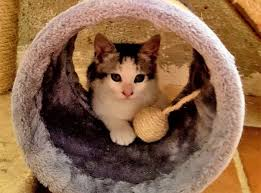
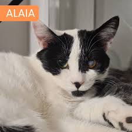
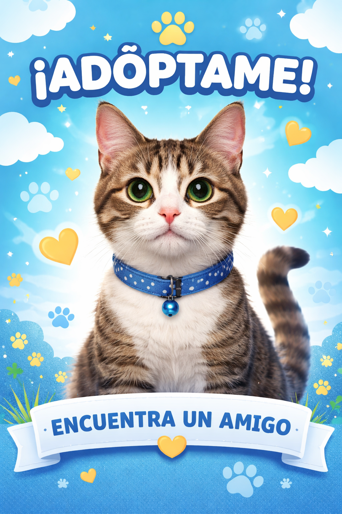

Nuestros Gatitos

Milo
2 meses • Juguetón

Luna
1 año • Cariñosa

Simón
3 años • Tranquilo
Dale una segunda oportunidad a un gatito que necesita amor.

Ayudas a un gatito necesitado.
Un compañero para toda la vida.
Recibe cariño sin límites.

2 meses • Juguetón
1 año • Cariñosa

3 años • Tranquilo